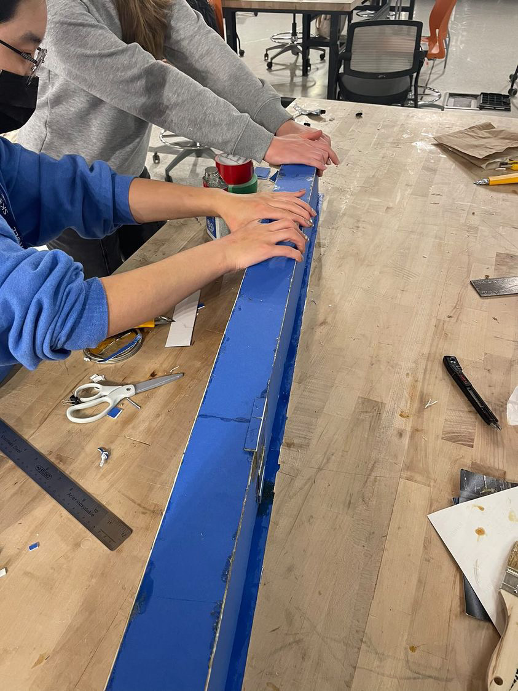
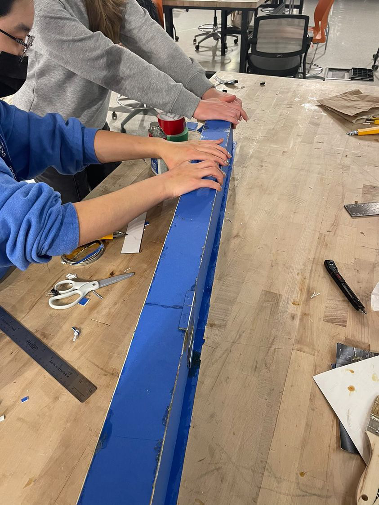

engineering, design, and engineering design
I see design as the process of creating something to serve a purpose. It involves understanding a need, creating, and sometimes
reiterating. Regardless of whether the process is messy, organized, done individually, or in groups, I do not believe there is
a fair way of characterizing something as being more “design” than another. Anything that fits the previous criteria, I just see
as design. This definition is largely based on my experiences with robotics competitions, hackathons, and now Praxis, where I saw
mind-blowing products that were all made through very different processes. This showed me that each process and structure for
design fit different personalities. The one thing all these design projects shared, however, was a purpose and the process
of creation.
Engineering is a subset of design that involves the application of the natural sciences and mathematics to any part of the
design process. For example, a data engineer might not engage in the entire design process but by gathering data on a product,
they see what is effective and what is not, which contributes to the reiteration process. Data engineers could also be assessing
the needs of a targeted community which would tie into the framing part of the design process. Some may argue the necessity of the
natural sciences and mathematics in engineering, but as a student in an engineering program who uses mathematics and science in
every course to date, I see it as obligatory. After all, it is a degree of “applied science”.
Engineering design is the process of design that involves the application of the natural sciences as a whole. Therefore,
unlike engineering, it would never refer to only a part of the design process, but instead the design process from start to
finish. This would include, at the very minimum, the identification of a need and the creation of a product to fulfill that
need. I do believe that this product would absolutely require the application of science or math to fulfill the “engineering”
aspect of the word.
I engage in engineering because I enjoy creating and want to make the world around me a better place. Even as a young child,
I have always been a caring person who found fulfillment and happiness through helping those in need. Of course, a lot of
disciplines help others but I am interested in long-lasting effects (like products that leave a legacy) and I also love how
engineering often involves the combination of several areas of knowledge to make the best results. Engineers need to
combine their unique experiences, creativity, knowledge of science, and a people-oriented approach to succeed and I want to
embody that.
values, biases, and assumptions
language, interpretation, and communication
My experiences with language and communication have shaped the way I communicate, interpret other perspectives, and build my own
perspective of the world around me. I was raised in two languages, French and English. Growing up with the freedom of expressing
myself and seeing the world through both has always made communication in only one of the two languages seem limiting. I am
therefore hyper-aware of just how much language can shape our interpretation of the world. It can even decide what exists to us
and what we ignore since certain things simply don't have words assigned to them in a language. Even minor details, like the fact
that a bridge is a masculine noun in French, can affect our perception. In my experience, francophones have a tendency to describe
bridges as strong and sturdy, rather than beautiful and elegant like speakers of other languages who have it as a feminine noun.
My languages, along with my formal education, and perhaps my philosophy books as well, have taught me that there is no way for us
to truly understand or communicate what reality is. As soon as we try to, it becomes an interpretation.
This is why when I approach opportunities in engineering, my interpretation of stakeholder needs may be limited by our means of
communication, my inherent biases due to my languages (or even our different use of the same language), and the way certain topics
are usually addressed in my culture. This is why I tend to communicate through more than one language (if possible), through
metaphors, art, photos, diagrams, and other mediums. It fills in the gaps of things that simply can’t be expressed through language
alone and may overcome the limitations of language.
positive change: community, environmentalism, social equity
I believe communities need people to exist and people need communities in order to give them a sense of meaning. One of the things
that drive my interest in engineering is to serve my community and make it a better place for everyone. Therefore, I try to
incorporate it into everything I do. In engineering, this usually translates to making accessibility, affordability, and safety
a priority in our objectives, as you will see in my Praxis II projects. This need has also specifically branched out into
social equity and environmentalism.
As a woman in engineering and a person who has worked with people of diverse backgrounds, I have developed a deep appreciation
for diversity and the inclusion of all people, from all backgrounds. After researching the effects of engineering for only specific
demographics and being educated on the negative impacts of past settler-colonial projects, I want to make sure I account for women
and other minorities in opportunity identification, research, and throughout the design process.
Like most people my age, I have been raised in an era with the constant threat of environmental issues and my education on these
topics probably surpasses that of many generations before mine. Because of this, I have become very considerate of the
environment, and this extends to my practice of engineering, namely it has increased my willingness to design for the environment
and for our future.
curiosity and willingness to listen
I value reading and learning about the world and the people around me. Although my grandfather never finished his high school education, he
is one of the smartest people I know and he loves to read newspapers. Fortunately, with all the time I have spent with him and the
articles he has encouraged me to read, he passed down his love for reading and the value of life-long learning to me. When I practice
engineering, I listen and read a lot before acting. With this, he also taught me that listening to others regardless of their
educational background or age is the most important part of being a kind and respectful leader. Over the course of my first year
in engineering science, I have been privileged enough to work with one of the most diverse groups of people I have ever met. Some
come from different countries, many practice different religions, most people speak different languages, and all of them have taught me
something new and valuable about engineering or about life.
I want to bring this value to the
table by fully understanding what people want and need or why problems are occurring before tackling an engineering opportunity.
strengths & weaknesses
strengths
Listening to understand: As mentioned earlier, I love listening and learning more about the people and the world around me.
Because I put a lot of effort into understanding other people's ideas, I tend to be good at integrative thinking, where we combine
the ideas of multiple group members into one main concept.
Trying new things: I've always loved trying new things. When new projects come along and I see an opportunity to
learn a new coding language, a framework, a new platform, I am always eager to jump in and figure it out.
weaknesses
Speaking: Throughout Praxis II, I have noticed that it takes me a while to feel comfortable enough to share
my ideas, especially verbally. Instead I continue to listen to others and wait until my ideas are fully fleshed out. This can hinder
my groups in stages like diverging, where pitching in any small points can lead to great ideas. To overcome this, the use of structured
diverging tools is very helpful. I also like to build a good foundation of psychological safety with the rest of my group to feel like
all of us can share anything without feeling judged.

.jpg) 
